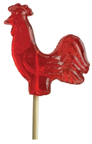

Televizyon ve radyolarda en çok reklamı yapılan ürünler her zaman olduğu gibi yeme-içme, temizlik ve bakım maddeleri, saç şampuanları ve elektronik eşyalar üzerineydi. Çok bildik markalar vardı hepsinden.
Reklamlarda genellikle bol sayıda insan kullanılır, bunlar sürekli atlar, zıplar, renkli kıyafetleri ve tipleriyle şarkı söylerlerdi. Reklamların şarkılı-türkülü olması o yılların reklamcılığını modasıydı. Markalar reklamlarında bildik yüzleri oynatmayı tercih ederlerdi. Yeni yeni yayınlanan televizyon reklamlarında bu oldukça önemli bir konuydu. Gerçi her zaman bu öyledir, ama o sıralar daha çok tercih edilirdi reklamlarda ünlü oynatmak. Reklamcılık olaylarından biri Zeki Müren ve Ajda Pekkan’ın beraber şarkı söyleyerek tanıtımını yaptıkları Alo markasının bir reklamıdır.Kadir İnanır’ın Permatik reklamları da o günler için değerliydi.
Aşağıda o zamanki televizyon ve radyolarda çok dikkat çeken reklamları yazmaya çalıştım. Hakkını yediğim varsa üzgünüm. İşte bunlardan bazı örnekler: Temizlik Malzemeleri: Omo, Alo, Tursil, Blendaks, Nivea vb. Elektronik Eşyalar: Grundig, Nordmende, Aeg, Pioner, Blau Punkt, Toshiba, Beko Hitachi vb. Yeme-İçme: Meysu, Tamek, Has Meyve Suları, Fruko, Elvan Gazozu bir de Limpo diye bir marka vardı. Onu da vişne sularından hatırlıyorum.
Bisküvi Adam: “Bisküvi Adam derler benim adıma, vazgeçemez kimse alışınca tadıma...” diye devam eden bir şarkısı vardı. Arada kalın sesli bir adam, “Bisküvi Adam, Bisküvi Adam hah hah haa,” derdi. Eti markasının bir ürünüydü.
Bonibon: Kendisine yüklenen vazife olan çikolata ve şeker olmanın dışında, ihtiyar kimseleri kandırmak yönünde bir tasarım olduğunu da unutmamak gerekir. Bu nesne pek güzel tada sahiptir. Ancak görünümü, ziyadesiyle piyasadaki ilaçları da andırmaktadır.
Hastalığın tedavisinde psikolojinin önemine inanan insanlar, onu yaşlılara ilaç yerine vermişler, onlar da bu ilaçtan gerçekten fayda görmüşlerdir.
Mesela dayılarımın en küçüğü, anneannemi sürekli bu bonibonlardan vererek, uzunca bir süre hastalıklara karşı korunmasında etkili olmuştur.
Güzel bir müziği vardı. Reklamlarında aradan yıllar geçmesine rağmen, yine bu cingılı kullanmışlardır.
“Bonibon, çantada cepte bonibon...” İşte böyle sözleri olan bir şeydi.
Eti:
- Bir bilmecem var çocuklar!
- Haydi sor, sor
- Çayda kahvaltıda yenir,
- Acaba nedir, nedir?
- Bisküvi denince akla...
- Tamam şimdi buldum.
- Hemen onun adı gelir.
- Eti, Eti, Eti.
Unutulmaz cingılı ile hafızalardan silinmeyen bu reklam, yıllarca konuşulmuş. İnsanlar bir şeyi hatırladıklarında ya da birilerine soru soracaklarında bu sözleri kullanmışlardır.
Leblebi Tozu: Yenirken her seferinde boğulma tehlikeleri atlatılan, ama hiç vazgeçilmeyen, çocukluğumuzun en unutulmaz, saçma icatlarından biridir.
Bu kadar tehlikeli bir yiyecek maddesinin nasıl olup da yıllarca kullanıldığını ve sağlıkla ilgili birimlerin buna niye dur demediğini anlamak mümkün değildir. İlkokul yıllarının vazgeçilmezi olan, okul çıkışlarında neden olduğu bilinmez ama koşa koşa kan ter içinde eve ulaşmaya çalışırken birden aklınıza leblebi tozu gelir. Dayanamaz ve gidip, en yakın kırtasiye ya da bakkaldan, çöp kovasının minyatürü olan kutusunda ve üstünde paraşütvari bir kapak ve lastik geçirilmiş bu ürünü alırdınız. Ağzınız yapış yapış olmuştur ve yedikten sonra susuzluktan kavrulur ve bir daha almayacağına dair kendinize söz verirdiniz. Ancak ertesi gün yine kan ter içinde eve dönerken dayanamaz tekrar alırdınız. En güzel hallerinden biri, üst damağa yapışmış halidir.
Çikletler: Küçüklüğümden beri sevmediğim, çok uzun yıllardan beri de bırakın sevmemeyi, nefret ettiğim bir konudur bu. En son ilkokul üçüncü sınıfa giderken, o da yanlışlıkla (şeker sandığım bir şeyin içinde çıkmıştı,) ağzıma değdi. Sevmezdim ama alırdım. Niye mi? Çünkü içinden araba resimleri çıkar ve onlarla oynardık, işte bu yüzden. Pek çok çeşit vardı. Adını bile hatırlayamadığım ama gözümün önüne gelen sürüyle, şekil şekil, renk renk sakızlar...
Çokomel: Çocukluğumuzun, kokusu ve tadıyla, en hoş hatıralarından birine sahiptir Çokomel. Altında bulunan, her zaman bayatmış hissi uyandıran bisküvisi ve üzerindeki pufuyla tadı damaklardadır. Yeme şekilleri tarza göre değişir. Önce alttaki bisküviyi ya da pufu yiyenler diye ikiye ayrılma vardır.
Paketlemesi, renkli ve üzerinde şekiller olan, alüminyum folyoya benzer bir malzeme ile yapılmıştır. Öyle bir itina ile açılır, yırtmamak için öyle azami gayret sarf edilirdi ki sormayın. Yırtılmadan çıkarılabilenler, defter arasına konmaya hak kazanmıştır. Bu kâğıtlar tırnak yardımıyla iyice düzleştirilir ve ara sıra hatırlanıp, tekrar düzleştirilip koklanmak üzere yerine konurdu.
Horoz Şekerler: Bir çubuğun, plastik ya da tahtadan -ki esas olan tahtadandır- ucunda horoz şekilli kırmızı bir şeker vardır. Bir ara o kadar moda idi ki, neredeyse ihtiyaç maddesi sıralamasında önlerde yer kapacaktı.
Bu şekeri yediğiniz vakit ağzınız, gözünüz boya içinde kalır, her yeriniz yapış yapış olurdu. Bu horoz şekerlerin bazılarının -ya da tamamının- içlerinde düdük vardır. Siz şekeri yedikçe düdük ortaya çıkar, düt dürü düüüüüt diye öttürebilirdiniz. Bu horoz şekillilerinden hariç, bir de emzik modelinde olanları vardır ki, onun da yeri yadsınamayacak kadar fazladır. Ayrıca unuttum sanmayın, bu işin ağa babası Elma Şekeri’dir.

Şekilli Çikolatalar: Şemsiye şekilli, bastona da benzeyen çubuğu, en fazla aklımda kalanı. Sigara gibi olanı, parmak şekilli ve daha değişik bir sürü çeşidi vardı. Rengârenk, cıvıl cıvıl parlak jelatinlere sarılı olurdu.
Bunlardan başka, altın renginde ve para şeklinde çikolatalar vardı. Hani kovboy filmlerinde verilen altın, sahte mi değil mi diye kontrol ederlerdi ya, dublör olarak bu çikolatalar oynardı o rolde. Hem oyuncunun ağzı tatlansın, hem boşuna altın harcanmasın diye. Hiç hoş olmadı bu benzetme..
La Vache Qui Rit: Bildiğimiz beyaz peynirin krem hali olan bu peynir markasının Türkçesi, “Gülen İnek” anlamına gelir. Küçüklü, büyüklü bir sürü insan, atlaya, zıplaya “La Vache Qui Rit” (La vaş ki ri) diye bağırarak şarkı söylerler, arada kahramanımız olan inek çıkar “hah hah ha,” diye gülerdi.
Bu reklam da epey etkili olmuş, Türkiye gündeminde kendine yer bulmuştu. Devekuşu Kabare yani Zeki Alasya-Metin Akpınar ikilisinin tiyatrolarından birinde de konusu olmuştur.
“Geceler” adlı oyunda Metin Akpınar, yaşı hayli geçkin Egeli bir köylüyü oynamaktadır. Zeytin tüketiminin azlığından, işlerin kötülüğünden bahsederken, rastladığı genç gruptakilerden bazıları buna gönderme yaparak, “La vaş ki ri” diye o şarkıyı söylerler. Buna kızan Metin Akpınar, (tüm oyun neredeyse ezberimdedir, aynen aktarıyorum,) “Herkesler peynirler, ekmekler yeyyo. Kimse bizim zeytin ekmeğe yüz vermeyyo. Gıçımın kenaaleri,” diyordu.
1 Litrelik Cam Kola: Aile boyu kola diye lanse edilmişti. Gerçekten de ufak bir aileye yeterdi bu kadar kola. Tadı bile farklıydı. Şimdi kolalarda o tat yok sanki. Keramet şişedeydi sanırım.
Ne o efsane ince belli şişe ne de bu 1 litrelik kola kaldı piyasada. Şişesi oldukça ağırdı. Depozitosu olurdu o zamanlar şişelerin, çoğu çocuk bu şişeleri bakkal amcalarına götürüp ya parasını alır ya da bir çikolata, şeker alarak takas ederdi. Hayatımıza plastik bu kadar girmemişti o zamanlar. Cam şişelerin en azından bir ağırlığı vardı.
Alaska-Frigo: O yılların sinema ortamı ile özdeşleşmiş bir üründür. Tahta kasalarına doldurulmuş olan bu dondurmalar, satıcının, dikkat çekmek için sürekli tahtaya vurması ve “Alaska, Frigo” diye bağırmasıyla satılırdı. Satıcı, tahta kasaya, genelde elindeki gazoz açacağıyla vurur ve dikkatleri çekerdi. Bir sinema klasiğidir.
Sarı renkli bir ambalaj içinde sunulan bu dondurmaların ambalajını açmak beceri isteyen bir iştir. Bazen altta kalmış ürünler gelir elinize, bunlar ezik büzüktür ama karanlıkta ne ezikliğine bakar ne de ağzımıza gelen kâğıda aldırış ederdik. Sonuçta ezik de olsa tadı değişmezdi.
Tüp Şokella: Türkiye’ye çok sonradan girmiş olan, önceleri ise Almancı diye tabir edilen yurtdışında çalışan insanlar tarafından ülkeye sokulan bu yiyecek maddesi, çocuklar tarafından çok tutulmuştu. Tüpü sıkıp, içindeki çikolataya ulaşmak çok zevkli bir uğraştı doğrusu. Tüp, mümkün olduğunca düzleştirilip, içinde ne varsa dışarı çıkarılmaya çalışılırdı. Kapak kısmında kalan kısım ise, birkaç dil darbesi ile yalanmak suretiyle bitirilirdi. Aslolan içindekini yemekti tabii ama gerçekte merak edilen, o çikolatanın nasıl olup da o tüpün içine girdiği idi.
Kristal Büfe: Fast-food kültürünün ilk deneyimlerini yaşatan yer olarak aklımdadır. Birkaç yerde şubesi olan ve hamburgeri bize tanıtan mekândır.
Hamburger denince şimdikiler gibi bir şeyler gelmemeli göz önüne, iki yuvarlak ekmeğin arasına konmuş bir köfte, bu kadar. Gerçi sonraları arasına domates de koymaya başlamışlardı.
Değişik bir yeme-içme kültürüydü. Kasaya parayı ödedikten sonra yiyeceğinizi almak, o yüksek masa gibi şeylerde ayak üzeri yemek, ilk zamanlar garip geliyordu. Ayrıca hazır olan hamburgeri görünce de şaşırıyordunuz.
Ara bir durumu vardı bu büfelerin, ne çok karizmatik ne de tiki, ama gene de bir havası vardı. O yaştaki çocukların için bir cazibe merkezi, belki biraz da statü sembolüydü. Buralarda tanıdıklarla karşılaşmak, hemen herkesin hoşuna giderdi.
McDonalds: Bu dünyanın en meşhur fast-food markası seksenli yılların ortasına doğru ilk şubesini Taksim’de açmış, kısa süre içinde gençlerin gözde buluşma mekânlarından biri haline gelmişti. Daha sonra başka başka yerlerde de şubelerini açan bu firma yaptığı türlü menülerle ve kazandıkları tonlarca paralarla dünyanın en ünlü markalarından biridir.
Demirbank: Tok sesli bir adam, “Bugün 8 Ocak Salı. Demirbank hayırlı günler diler. Demirbank,” diye kafalara dank eden bir sesle günün tarihini verirdi. Bu aslında basit bir radyo reklamıydı. Ancak o zamanlar radyo, belki de televizyondan daha etkili bir iletişim aracıydı.
Eros: Adını mitolojiden, insanları elindeki oklarla vurarak birbirine âşık eden karakterden alan bu markanın reklamcıları, slogan olarak, “Kıskanç bayanlar, eşinize Eros giydirmeyin!”i seçmişlerdi.
Paranoya sebebi olan bu slogan yüzünde, gerçekten bazı bayanların eşlerine bu markayı giydirmedikleri konuşulur olmuştu. Belki de piyasada ilk defa bir iç giyim firmasının reklamları, belki sırf bu yüzden tutmamış, ya da “aman ben kıskanç değilim,” diyen bayanlar tarafından bolca satın alınmıştır.
Lee Cooper: Bu kadar az sözle, bu denli konuşulan ve gündem olan reklam herhalde çok azdır. Kızlı-erkekli bir grup gencin kıçlarına vurarak, “Ummah ummah Lee Cooper,” demeleri, milleti gaza getirip, efsane olmaya yetmişti. Okulda sokakta, insanlar fırsatını buldular mı hemen bir “Lee Cooper” çevirirlerdi.
Satışları etkiledi mi bilmem, ama gündemi çok meşgul ettiğini rahatlıkla söyleyebilirim.
ITT Schaub Lorenz: Televizyonlar evlerimize iyice yerleşmiş, hatta neredeyse hayatımıza egemenliklerini kurmuşlardı. Renkli televizyonu olan ev sayısı iyice artıyordu. Rekabet hat safhada, piyasaya da yanılmıyorsam, Grundig ve Philips hâkimdi. Diğer markalar ve yenileri, kendilerine pastadan pay kapma telaşındaydılar.
Çeşitli markalar vardı. Nordmende, Blaupunkt, Beko Hitachi, Sony, Grundig, Saba, Toshiba vb. bunlann dışında bir de ITT Schaub Lorenz çıkmıştı. En hatırlanan reklamlarında Bilge Zobu’yu oynatmışlardı. Reklam metni ya da ürünün iyi tanıtılmasından ziyade, adını söylemenin zorluğu ve garipliği yüzünden akıllarda kalmıştır.
Bir başka reklamlarında “tık tık tık” diye televizyona vurur gibi ses çıkartan garip şekilde dans edip şarkı söyleyen bir grup vardı. Bu tık tık sesi Ay-tii-tii demek gibiydi sanki.
İzocam: Isı ve ses yalıtımı işi yapan bir firmadır, fakat margarin-Sana Yağ. Kâğıt mendil-Selpak ikilisi gibi bir duruma düşmüştür. Çizgi filmli reklamı insanların çok hoşuna gitmiş, reklamda kullanılan slogan: “yöneticimiz uyuyor mu?” dilimize pelesenk olmuştur. Her türlü olumsuz işlerde işi yapan kişiye bu sözlerle sataşılmıştır.
Apartman sakinleri kapıcıya sürekli tacizde bulunurlar, üst katta bulunan kafası bigudili, kat kat giyinmiş kadın üşüdüğünü, ısıyı arttırmasını isterken, alt kattaki piknik tip adamsa sıcaktan bunalmıştır. Kapıcı en sonunda İzocam yaptırır:
“Üst kattakiler donmuyor, alt kattakiler pişmiyor. Benim de koşturmaktan tabanlarım şişmiyor. Sağolasın İzocam” derdi. Kapıcıyı Erol Günaydın seslendirirdi.
Lamborghini Su Motorları: Köylü vatandaşlara hitap eden bu reklamın şarkısı çok güzeldi. İnsanı gaza getiren ritmiyle, epey bir süre dilimize yerleşmişti. Neşeli köylüler, motoru çalıştırıp, sular büyük bir hızla tarlalara akarken, güzel görüntüler gelirdi ekranlara.
Tabii bu ekranlara böyle gelirdi. Yoksa bu işleri yapan insanların ne kadar zorlandıklarını yerinde görmek lazımdı. Çoğu ailenin yaptığı gibi, biz de ailecek bazı bayram tatillerinde köyümüze giderdik. Orada, köyde yaşayan insanların günlük işleri nasıl yaptığını görme fırsatımız olurdu. Ve motorlar ne kadar iyi de olsa insanların perişanlığını görürdük.
Şöyle bir cingılı vardı:
“Lamborghini çalışınca, sular çağlayıp coşunca, Lamborghini çalışınca, ne keyiftir, ne keyif!”
Umarım hatırlamışsınızdır.
Mintax: Müziği ve cevabı ile unutulmazlar arasındadır. Bir işi becermiş insanlara, “Nasıl yaptın?” diye sorulduğunda bu cevap alınırdı. “Mintax’la canım Mintax’la”. Çünkü, reklamdaki kadın böyle cevap veriyordu.
Ürünün rengi olan yeşil, “Yeşil Işık” olarak lanse edilir. “Yakalayın yeşil ışığı, hesaplı, parlak bulaşığı,” diye bir sloganı vardır. Yine Devekuşu Kabare’nin “Reklamlar” adlı oyunlarında, siyasetçilerle uğraştıkları bir skeçte, Metin Akpınar Erbakan’ın taklidini yaparken, bu reklama gönderme yaparak, Erbakan’a şunları söyletirdi: “Yakalayın yeşil ışığı, sizde olun Hakk aşığı,”
Billur Tuz: İlginçtir, bazı ürünlerin artık reklamı fazlaca yapmadığının kanıtı gibidir Billur Tuz. O sıralar oldukça yüksek sayıda reklamları çıkardı. Çeşit çeşit senaryolarla yaparlardı. Bazıları çokça beğenilmese de Ustura Kemal tarzı bir çizgi kahraman gelir: “Heyt!” diye bir ünler sonra da iyotlu, iyotsuz diye tuzu anlatırdı. Karıştırıyor olabilirim, ama o karaktere galiba Tuzsuz Deli Bekir diyorduk. Ayrıca Berna Laçin’i kullanmışlardı bir reklamlarında da. Sloganı da şudur: “Billur Tuz, akar akar, akar,” sanki rutubetten etkilemez, tuzluklarınızın ucu suya da batsa o bir yolunu bulur akar demek istiyorlardı.
Shell Rotella Yirmi Elli: Zamanın müzikli reklamlarından biri de, Shell’e aitti. Kaptan şoför, muavini ve destekleyicileri aşağıdaki sözlerle bir şarkı söylerlerdi.:
“- Kaptan bu bizim yağımız değil mi?
- Öyle muavin bizim yağımız. Hiç eksilmez, basıncı düşmez. Her iklimde, dört mevsimde. Öyleyse hep beraber.
- Shell Rotella yirmi elli, Shell Rotella yirmi elli, Shell Rotella yirmi elli, hey hey hey heeeey!”
Balinler: İlkokul yıllarımızın vazgeçilmezi olan önlüklerimizde önemli bir markaydı. Özellikle radyo reklamlarıyla hafızalardadır. Radyo reklamları yayınlandığında hele de okul zamanı yaklaşmışsa muhakkak duyardınız:
“- Okul önlüklerinde Balinleriz, dıt dıt dıı, okul formalarında Balinleriz, dıt dıt dıı…”
Cem Düdüklü Tencere: Radyo ve gazetelerden sonra televizyonlarda da boy göstermişti. Reklamlarında ihracat yapılan bir ürün olduğu vurgulanırdı. “… yurtdışı ilk parti Orta Doğu ve Afrika mutfaklarına girmeye başladı,” gibi bir şeyler söylerlerdi.
Eva: Bu bir çamaşır makinesi reklamıydı. Çelik kazanlı bir makine tanıtılır dört dakikada bir kilo çamaşır yıkardı. Reklam sloganları da şöyleydi: “Al bir Eva, rahatla, Her eve bir Eva,”
Özcan Çiklet: Çeşitli reklamlar gösterilmişti, ama benim en iyi hatırladığım Kayahan ve Ersan Erdura’nın oynadıkları filmdir. Kayahan elinde gitarı, askılı pantolonu ve gözünde gözlükleri olduğu halde şarkı söylerken araya Ersan Erdura girer o da bir şeyler söyler. Sonra yaşlı bir adam “Bana da Özcan,” derken kızın biri oradan “Pışşıık!” yapar. Bu pışık sözü epeyce kullanılmıştı.
Arko Krem: Bu marka da sıkça reklamlarını yapardı. Elbette bir sürü reklamı vardı, ama birini buraya alalım. Genç bir kız ekranda görünür ve ailesindeki herkesi bir sebeple Arko kullandığını anlatırdı. Annesi bulaşıktan sonra, babası soğuktan önce, ablası duştan sonra küçük kız kardeşi de oyundan sonra kullanırdı bu kremi. Fakat neden olduğunu bilmem kendisinin nerde kullandığını ya da ne sebeple kullanmadığını söylemiyordu!
Nuh’un Ankara Makarnası: Burada da yine şarkılı bir reklam yapmışlardı. Nerelerde, nelerle yenebileceğini anlatıyorlardı. Renkli, hareketli görüntüler eşliğinde gelirdi ekrana çeşit çeşit makarnalar.
Artema: En akılda kalan reklamlarında Şener Şen oynamıştı. Sinir bir tipti. “Açıyorum, kapıyorum. Ben bunu hep yapıyorum,” deyip durdu. Sinir dediğime bakmayın, aslında sempatikti. Çok uzun süre bu sözler kullanıldı. İnsanlar her durumda kendilerine uygun bir ara bulup söylediler.
Saba Televizyon: Bu televizyonun reklamlarında dört sistemli olduğuna vurgu yapılır, bunun ilerde kanal sayısı arttığında işe yarayacağı anlatılırdı. Yine sinema oyuncularının oynadığı reklamlarda taksitli satış yapıldığı ve ödemenin kolay olacağı anlatılırdı.
Toshiba Video Player: bu video oynatıcısının reklamında Atilla Arcan oynardı.
Ayrıca yine Atilla Arcan’ın rol aldığı bir de Patbon Balonlu Çikletleri reklamı vardı.
Efes Pilsen: Reklam sloganları “Bira bu kapağın altındadır,” cümlesi ile bir seri halinde yayınlanan reklamları vardı. Buradaki slogan da benzeştirilerek pek çok şeyde kullanılmıştı.
İGS: Bu giyim firmasının reklamı da evlere şenlik türdendi. Bir sürü insan, fötr şapkalı amcalar, takım elbiseli adamlar, vatkalı elbiseleriyle kadınlar sokaklarda gezip yeni elbiseler almışlar diye sevinip duruyorlardı.
Milli Piyango İdaresi’nin reklamlarında da Zeki Alaysa-Metin Akpınar ikilisi oynamıştı. Bir tanesinde bir kazanın içinde Yamyamlar tarafından kaynatılmak üzere bekliyorlardı. Şanslarına mı şanssızlıklarına mı üzüldükleri belli değildi.
Hürriyet Gazetesi’nin Kelebek adlı ekinin reklamlarında ise Ali Poyrazoğlu çığırtkanlık yapar bir şekilde her gün için ayrı içeriği olan bu eki tanıtıyordu.
Pembo Çiklet: Bir başka sakız markası da Pembo idi. Bu reklamlar çizgi olarak hazırlanmıştı. Kahramanımız Pembo kısa boylu toparlak bir adam olmasına karşın bir basketbol takımında oyuncuydu. O koca koca adamların arasından geçip, son saniyelerde sakızın balonu eşliğinde yükselir ve sayısını atıp takımın yıldızı olurdu.
Vestel Renkli Televizyon: Emel Sayın’ın rol aldığı film etkileyiciydi. Renkli televizyonların yeni yeni evlerde yer aldığı günlerdi. Emel Sayın renklerin çok güzel olduğunu anlatırken, yanındakiler kendisine değil de odada bulunan televizyondaki Emel Sayın’a bakarlardı.
Uludağ Gazlı İçecekleri: Bu marka da reklamlarında bol sayıda insanı oradan oraya zıplatırlar ve şarkılar eşliğinde mutluluktan havaya uçururlardı. Pikniklerin vazgeçilmezi olarak yansıtılırdı bu içecek.
Lassa: Futbolcu Rıdvan’ın Renault araba ile yaptığı gösterisi sonunda daracık bir yere park etmesiyle biterdi. O sıralar Rıdvan Türkiye’nin en iyi futbolcusuydu. Saha içinde yaptığı çalımları arabayla da yapabildiği gösteriliyordu. Elbette iyi bir şoför ve Lassa sayesinde.